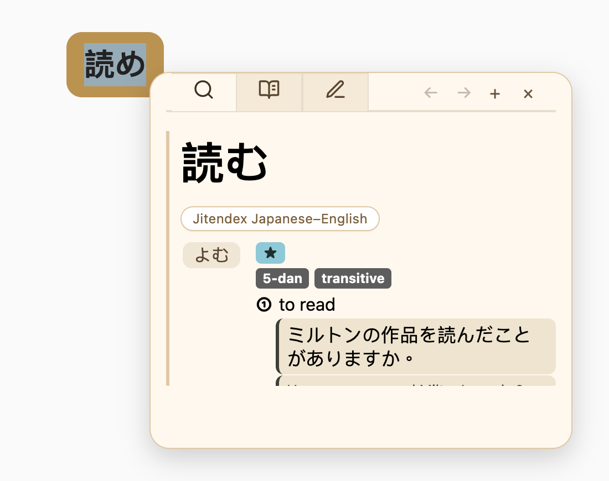
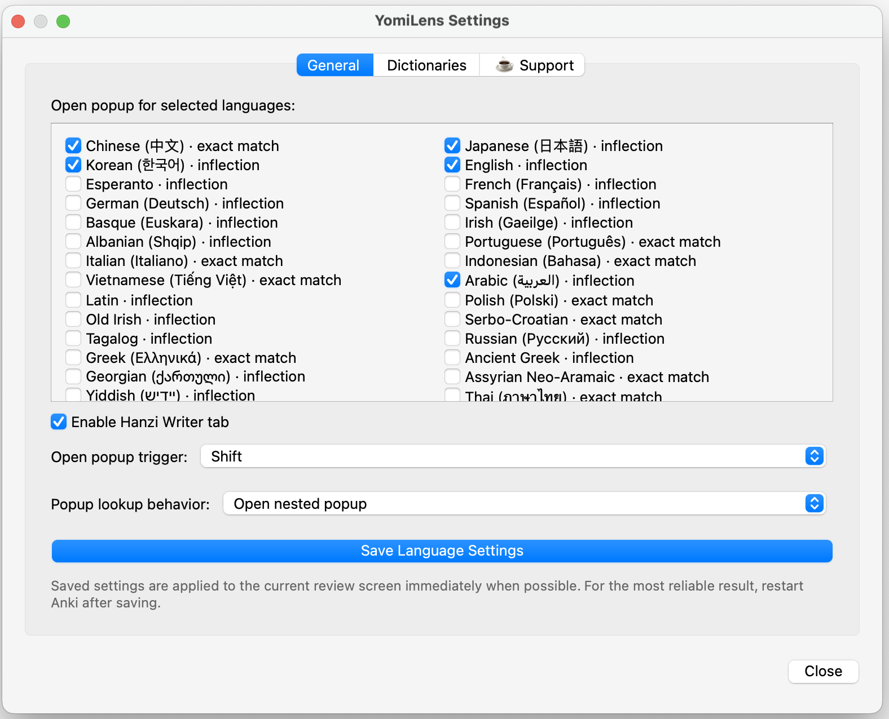
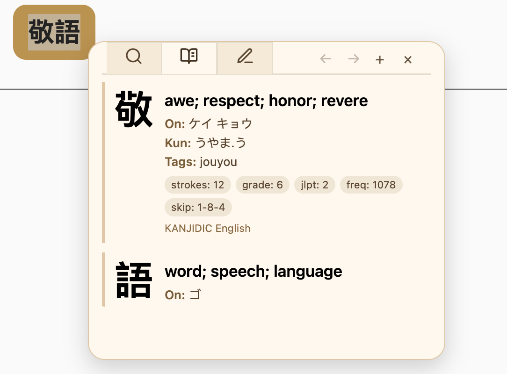
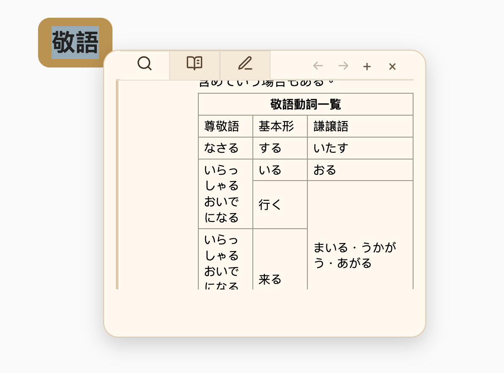

A Yomitan/Yomichan-style popup dictionary for Anki review. Select a word on a card, look it up instantly, inspect kanji, practice stroke order, and keep your dictionary workflow inside Anki.
Go to Dictionaries and download or import Yomitan/Yomichan ZIP dictionaries.
4
Restart Anki after dictionary changes.
5
During review, select text on a card to open the popup.
Important: after changing dictionaries, restart Anki before using YomiLens again.
02
Popup Lookup During Review
Select text on your Anki card and YomiLens opens a floating dictionary popup directly on the review screen. The popup includes Search, Kanji, optional Writer, back/forward navigation, nested lookup, and configurable web lookup buttons.
Yomitan/Yomichan-compatible dictionary ZIP import
Multi-language lookup with inflection support for many languages
Japanese deinflection and rich structured dictionary entries
KANJIDIC-style kanji lookup in a dedicated Kanji tab

Japanese lookup can resolve inflected forms and show metadata, senses, and examples.
03
Language Controls

Enable only the languages you want YomiLens to react to. Some languages use exact matching, while others use inflection rules adapted from the Yomitan ecosystem.
Choose selected languages for popup lookup.
Set a trigger key such as Shift or Option/Alt.
Choose whether popup lookup reuses the current popup or opens a nested popup.
Enable or hide the Hanzi Writer tab.
04
Kanji Lookup
When a KANJIDIC-style dictionary is installed, YomiLens can show kanji meanings, readings, tags, stroke count, grade, JLPT level, frequency, and SKIP code. If a single kanji has no term result, YomiLens can fall back to the Kanji tab.
Clicking a kanji inside a searched word is useful for checking the character without leaving the current popup flow.


YomiLens renders richer Yomitan content, including tables and structured blocks.
05
Rich Entries And Writer Practice
YomiLens supports richer dictionary entries, including examples, notes, tags, cross references, and tables. The optional Hanzi Writer tab adds stroke-order practice for Chinese characters.
Optional Hanzi Writer stroke-order practice
Nested popup lookup inside existing popup results
Optional Google audio, YouGlish, and Google Images buttons
Profile-safe dictionary storage outside the add-on folder
06
Web Lookup Buttons
Audio, YouGlish, and Google Images buttons are optional. In Settings → Web Lookup, choose which buttons appear and map each dictionary source to the right YouGlish or Google audio language.
Audio can auto-speak or wait for click.YouGlish opens pronunciation examples inside Anki.IMG opens image search in an in-Anki popup.
07
Dictionary Management
Use Settings → Dictionaries to download bundled dictionary ZIPs or import your own Yomitan/Yomichan-compatible ZIP files. YomiLens stores dictionary data in your Anki profile so updates do not wipe installed dictionaries.
Download
Install curated dictionaries from the YomiLens dictionary repo.
Import ZIP
Load any compatible Yomitan/Yomichan dictionary package.
Manage
Enable, disable, reorder, delete, or re-download dictionaries.
Pick a feature for its setup steps. Frequency, pitch accent and Custom CSS require a build that includes those features; they may not yet be available in your AnkiWeb release.
Open Settings → Web Lookup. After installing dictionaries, click Refresh to load their sources.
Enable Show IMG button. Choose the Google language for each dictionary source, then click Save Web Lookup Settings.
Look up a word and click IMG to search for images. An internet connection is required.
YouGlish
In Settings → Web Lookup, enable Show YG button.
Choose the YouGlish language for each dictionary and save. This setting is separate from the Google language.
Click YG beside a lookup result to hear the word used in videos. Available examples depend on YouGlish and the selected language.
Audio
In Settings → Web Lookup, enable Show audio button.
Choose the Google language and Audio voice for each source. Enable Auto speak only if you want automatic playback, then save.
Click the speaker beside a result to hear Google TTS. Playback requires internet access.
Frequency dictionaries
Use a build that supports frequency metadata. Download a Yomitan frequency ZIP, such as JPDB, separately from your meaning dictionary.
Open Settings → Dictionaries and import the ZIP. Keep both the frequency source and your Japanese meaning dictionary enabled, then restart Anki.
Look up a word. Matching frequency values appear beside the dictionary name. Coverage and ranking depend on the source; no badge can simply mean no matching entry.
In a build that includes Custom CSS, open Settings → General → Custom CSS.
Use Insert Example to see YomiLens selectors, then edit the properties you need. It appends a sample without replacing existing CSS.
Click Preview to inspect the sample, then Save CSS. Open a fresh popup to check real entries. Yomitan CSS is not directly compatible; this field accepts CSS, not JavaScript.
Save your General settings and open a new lookup to see the result.
Choose a dark palette explicitly for a dark popup. Your chosen popup palette stays independent of Anki's light/dark appearance.
Hook + Shift
In Settings → General, enable Hook + Shift mode and the lookup languages you need, then save.
During review, place your pointer over a word and hold Shift to look it up without selecting it.
Position the pointer directly over the character you want. Card layout and dictionary coverage can affect matching.
Nested popups
Open Settings → General and select Open nested popup for lookup inside popups, then save.
Open a lookup, then select a word in its definition to open a child popup.
The parent stays available so you can return to the original entry. Choose reuse instead if you prefer a single popup.
08
Troubleshooting
No popup appears
Open Settings → General and confirm the language is enabled. If you use a trigger key, hold that key while selecting text.
Popup opens but says Not found
Install a dictionary for that language, then restart Anki. For Japanese single-kanji lookup, install a KANJIDIC-style dictionary.
Web Lookup sources are empty
If you just installed dictionaries, open Settings → Web Lookup and click Refresh to load the new dictionary sources.
Dictionary changes feel stale
After import, download, delete, enable/disable, or re-download, restart Anki before continuing review.
Credits
YomiLens is inspired by the Yomitan/Yomichan ecosystem and supports its dictionary format. Dictionary data credits include EDRDG, Jitendex, CC-CEDICT, LingLook / Phong Phan, Open English WordNet, Free Vietnamese Dictionary Project, LisaanMasry, and other open dictionary contributors.